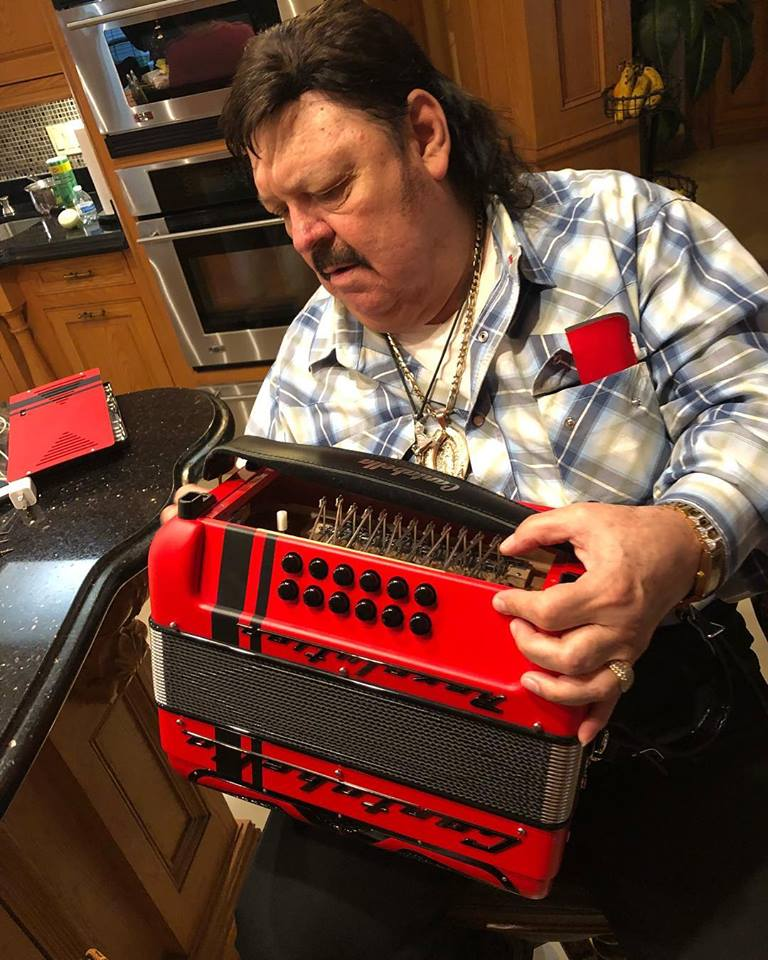

Ramón Ayala
¿Quién es Ramon Ayala?
Hablar de la música norteña es hablar del más importante exponente en este género como lo es DON RAMON AYALA, quien en el año de 1945
nace en la Colonia Argentina en la Ciudad de Monterrey, Nuevo León.
A los cinco años de edad, el ahora “REY DEL ACORDEON”, tuvo el primer contacto con el mundo de la música, cuando, tuvo en sus manos un
acordeón, recibiendo clases de su padre Ramón Covarrubias, RAMON AYALA siendo un adolescente acude a una cantina conocida por todos como
“Cadillac” ahí conoce a Cornelio Reyna y Juan Peña, quienes formaban el dueto “Carta Blanca”.
Más tarde, Juan Peña salde de “Carta Blanca” y es entonces cuando Cornelio Reyna le propone a RAMON AYALA trabajar juntos haciéndose
llamar “Los Relámpagos del Norte”. Después de visitar varias casas grabadoras, la compañía Bego de Mc Allen, Texas, fue la que les dio
la primera oportunidad de grabar el tema “Ya no llores” por el año de 1964, convirtiéndose en su primer éxito y cambiando radicalmente su destino.
En 1971 Cornelio Reyna decide hacer su carrera como solista. RAMON inmediatamente forma su grupo, el cual lleva el nombre de LOS BRAVOS DEL NORTE.
Historia Paso a Paso
En sus primeros tres años grabó para la compañía Marsol en los Estados Unidos con la que cada cuatro meses lanzaban un disco, grabando en total nueve producciones bajo este sello, durante este tiempo Antonio Sauceda acompañaba a Ramón Ayala y Los Bravos del Norte con la voz y bajo sexto. En 1973 firman contrato con la compañía DLV en México, la cual los llevaría a la cima del éxito con su primer disco titulado “Ni Por Mil Puñados de Oro”.En 1974 reciben su primer Disco de Oro por “Chaparra de mi Amor”, este mismo año Eliseo Robles se integra a Los Bravos del Norte con “Besos y Caricias” y durante 14 años acompañó a Ramón Ayala en sus giras y presentaciones. Su producción “Para Poder Llegar a ti” también lo llevó a recibir Disco de Oro en 1979.
Para el año de 1986 recibe nuevamente Disco de Oro por más de 500 mil copias vendidas y al siguiente año la compañía disquera le otorga Disco de Platino. La compañía DLV le rinde homenaje a “El Rey del Acordeón” por sus 30 años de trayectoria artística y pone a la venta las 52 producciones que realizaron Los Bravos del Norte durante su permanencia en este sello. Con 33 años de exitosa carrera musical, Ramón Ayala ofrece una nueva producción discográfica “En las Alas de un Ángel”, un homenaje musical al fallecido Cornelio Reyna. Con este material también recibió Disco de Oro por las más de 100 mil unidades vendidas en México.
Por su ininterrumpida trayectoria artística, su compañía disquera Sony Music en México da a conocer su primer álbum en vivo reuniendo sus más grandes éxitos “En Vivo... El Hombre y su Música”, es el título de esta producción que contiene 17 clásicos de El Rey del Acordeón y dos temas inéditos. El Consejo para la Cultura y las Artes de Nuevo León le otorgan las “Llaves de Cristal” y su representante artístico, Servando Cano le devela un busto esculpido por Cuauhtémoc Zamudio. Con gran esfuerzo logra hacer una tradición en el mes de diciembre su Posada Navideña en Hidalgo, Texas, donde regala más de 15 mil juguetes a niños de escasos recursos.
En el 2003 celebra 40 años de carrera musical con 102 discos bajo el brazo con el que se corona como “El Invicto”. El promedio de eventos anuales en México fluctúa de los 72 a los 26 eventos, mientras que en Estados Unidos se presenta de 65 a 70 veces por año. Ramón Ayala ha producido 98 discos desde el inicio de su carrera y ha mantenido un promedio anual de ventas de 750 mil ejemplares en los países de Habla Hispana. También ha participado en 13 películas a nivel nacional compartiendo créditos con figuras como Antonio Aguilar, Los Hermanos Almada y el fallecido Cornelio Reyna.
Premios y Reconocimientos
El Rey del acordeón ganó los siguientes reconocimientos:
- Un Premio Grammy Latino 2001 en la categoría “Mejor Álbum Norteño” por el disco “Quémame los Ojos”.
- Un Premio Grammy Latino 2002 en la categoría “Mejor Álbum Norteño” por el disco “El Número 100”.
- Un Premio Grammy Latino 2002 en la categoría “Mejor Canción Regional Mexicana” por el tema “Del Otro Lado del Portón”.
- Un Premio Grammy Americano 2002 en la categoría “Mejor Álbum mexicano-americano” por el disco “En Vivo… El Hombre y su Música”.
- Una a los Premios Grammy Latino 2000, en la categoría “Mejor Álbum Norteño” por el disco de Cornelio Reyna Jr.: “La leyenda continúa…”.

Recomendaciones
- Un Premio Grammy Latino 2001 en la categoría “Mejor Álbum Norteño” por el disco “Quémame los Ojos”.
- Un Premio Grammy Latino 2002 en la categoría “Mejor Álbum Norteño” por el disco “El Número 100”.
- Un Premio Grammy Latino 2002 en la categoría “Mejor Canción Regional Mexicana” por el tema “Del Otro Lado del Portón”.
- Un Premio Grammy Americano 2002 en la categoría “Mejor Álbum mexicano-americano” por el disco “En Vivo… El Hombre y su Música”.
- Una a los Premios Grammy Latino 2000, en la categoría “Mejor Álbum Norteño” por el disco de Cornelio Reyna Jr.: “La leyenda continúa…”.